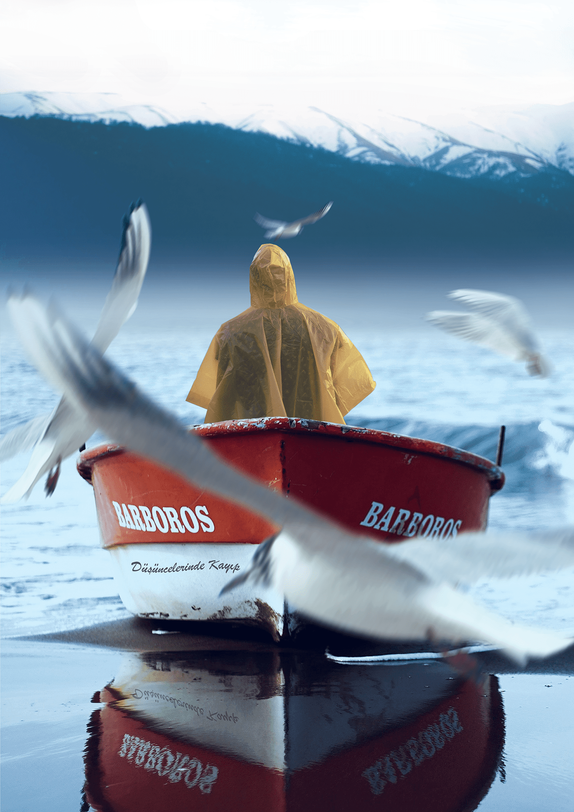
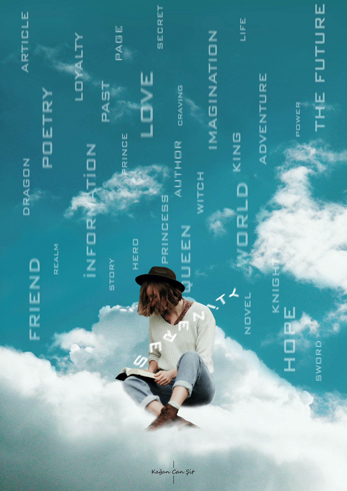
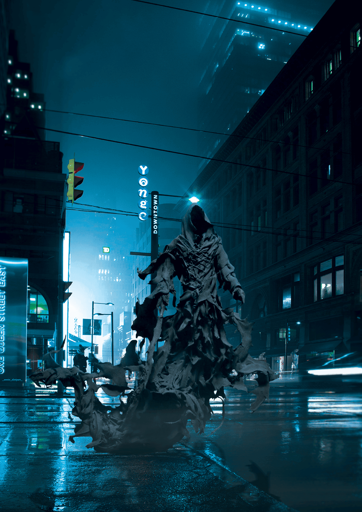
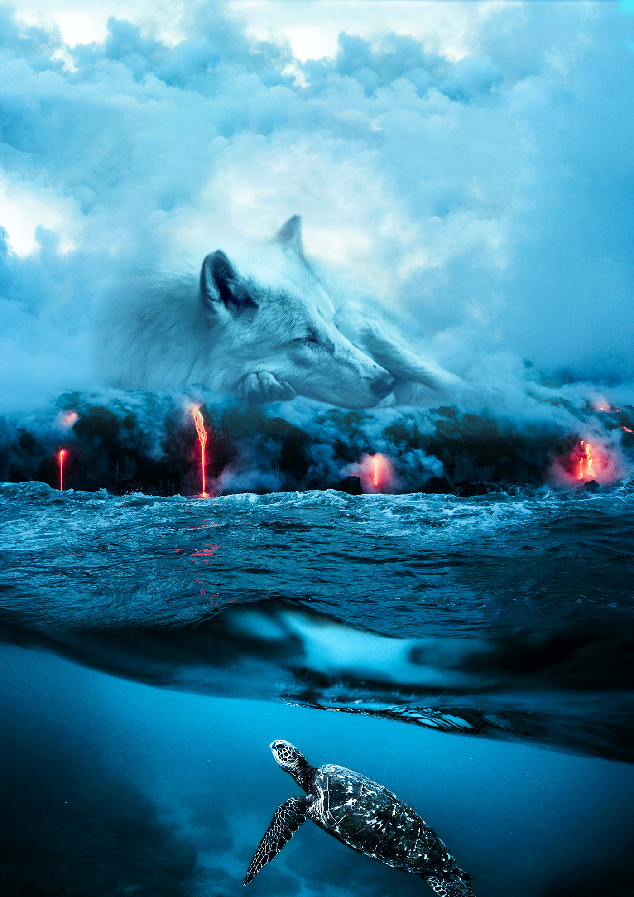
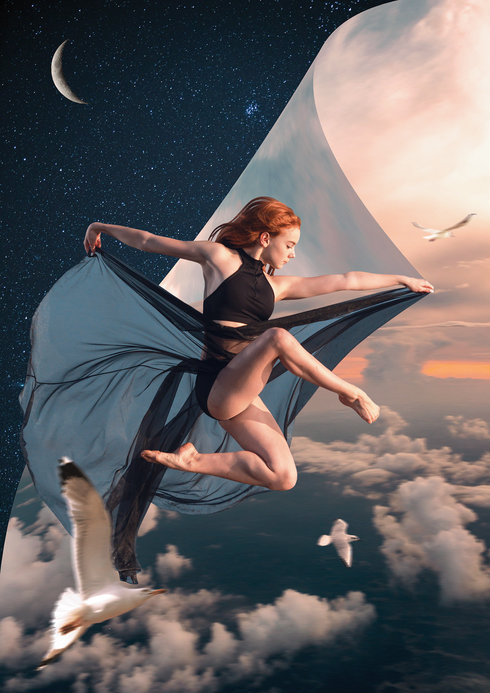
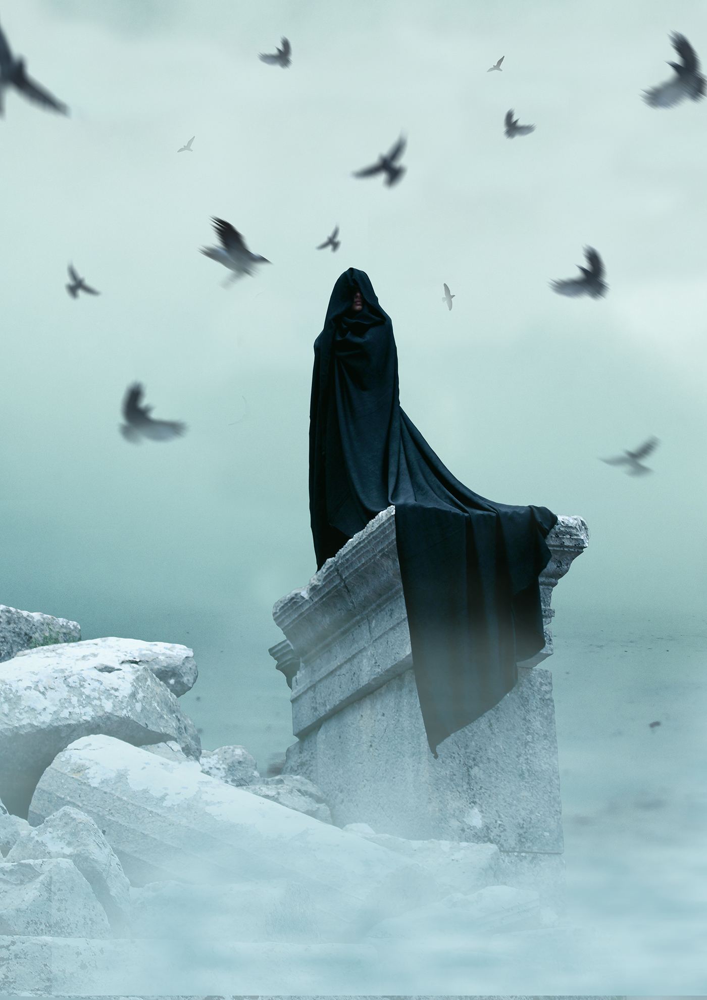

"Bir ulus sanattan ve sanatçıdan yoksunsa, tam bir hayata sahip olamaz."
Mustafa Kemal Atatürk
Tasarım
Hayal gücünü yakıt olarak kullananlara...
Grafik tasarım ve dijital manipülasyon üzerine uğraşım lise döneminde başladı. Başlangıçta birçok görsel içeriğin oluşturulmasını ve düzenlenmesini ilginç bulup merak etmiş, gerçek dışı görsel içeriklerin ve grafiklerin oluşturmasını kesinlikle heyecan verici bulmuştum. O dönem için ortalamanın altında bir bilgisayar ile defalarca hatalar alarak, çökme problemleri ile uzunca bir süre buradaki niteliklerimi arttırmak için vakit ayırdım.
Fakat bu geliştirmiş olduğum nitelikler için ilerleyen dönümde iyi ki öğrenmişim dediğim birçok zaman oldu. Birçok yabancı ve yerli olmak üzere deneyimli kişi ile tanıştım, bilgi aldım, ufkumu genişlettim. Grafik tasarım uğraşı benim için sosyal medya üzerinde bilgi paylaşımının ve topluluklarının önemini ufkuma kazandıran bir uğraş oldu. Bu kazanmış olduğum nitelik ile internet dünyasında araştırma ve belirli emek, istikrar ile istenilen bilgiyi edinebileceğimi, mesleğinde nitelikli insanlar ile görüşme fırsatlarını yakalayabileceğim bilgisini beraberinde getirdi.
Tüm olanlar doğrultusunda aktif olarak blog okuma, teknoloji kanallarını takip etme, yabancı dokümanlara göz atma ve bilgi kaynaklarını keşfetme becerimi geliştirmemi sağladı. Benim için bu nitelikler paha biçilmez bir öneme sahip. Günümüzde hangi iş ile uğraşıyor olursanız olun niteliklerinizi ve yeteneklerinizi geliştirmek için öğrenmeye devam etmeli, doğru bilgi ve kişilere ulaşmalısınız. Anlayacağız çok keyifli ve keşfedilmesi gereken bir uğraş olduğunu düşünüyorum. Küçük bir tüyo vermek istiyorum. Her ekibin bir grafik işi olur. Bu dediğimi asla unutmayın. İçerisinde yer almak istediğiniz bir topluluk ve ekip için bu becerinizi ön plana çıkarabilirsiniz.
Tasarıma dair odaklandığım kısım dijital manipülasyon. Aktif en çok kullandığım araç ise Adobe Photoshop diyebilirim. Gerçekleştirdiğim birçok projem ve içeriğim mevcut. Fakat artık yolumu yazılım üzerine ağırlıklı olmak üzere inşa ediyorum. Tüm tasarım içeriklerimi görüntülemek ve tasarıma dair bilgi almak için aşağıdaki sayfalar sana yardımcı olacaktır. Ayrıca örnek olması adına birkaç görsel tasarımımı ekliyorum.
Tasarımlarımı daha detaylı incelemek istersen Behance ve Instagram adresimi ziyaret edebilirsin.
Tasarımların kopyalanması ve izinsiz dağıltılması, kullanılması yasaktır!










